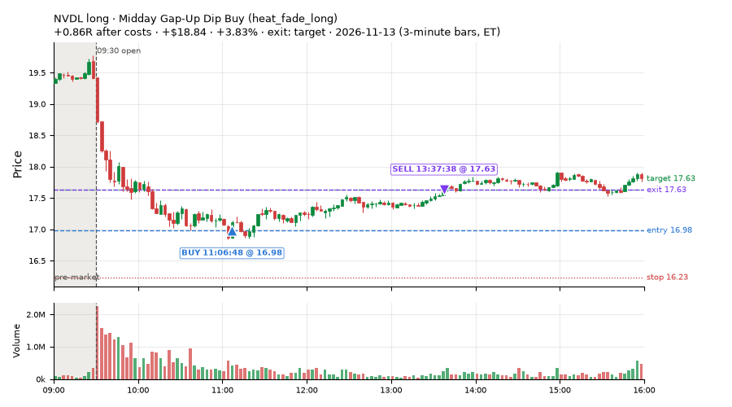
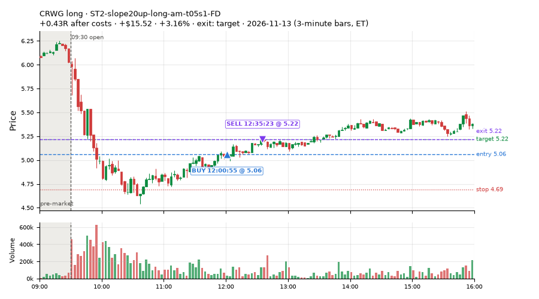
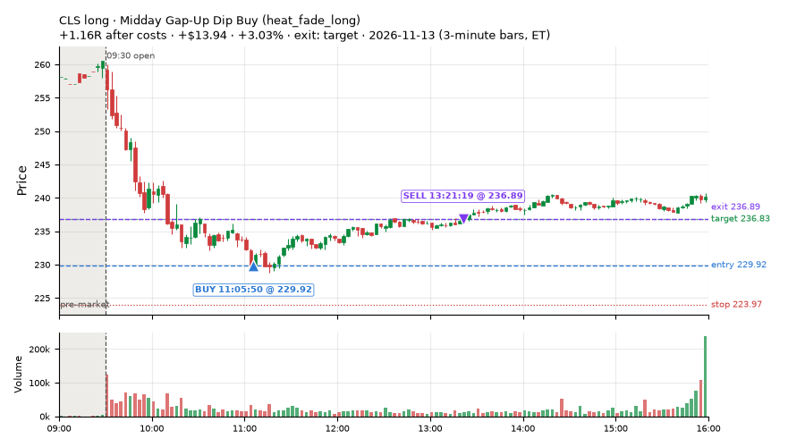
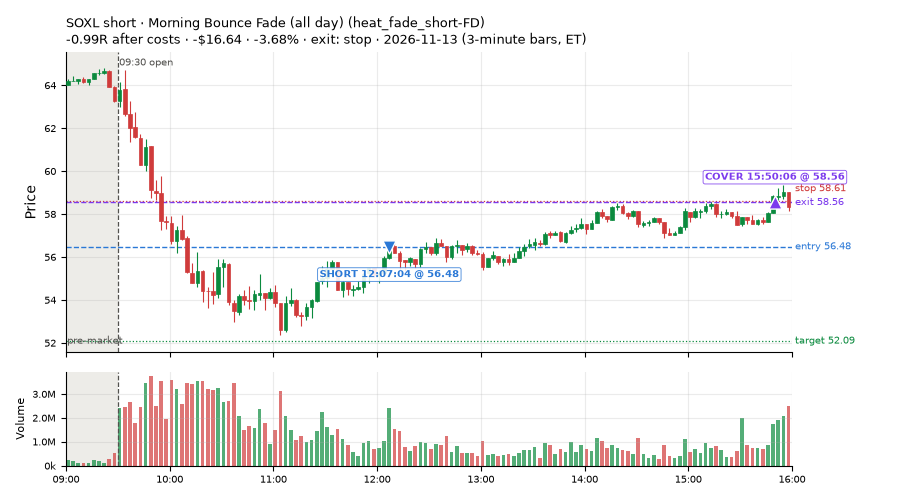
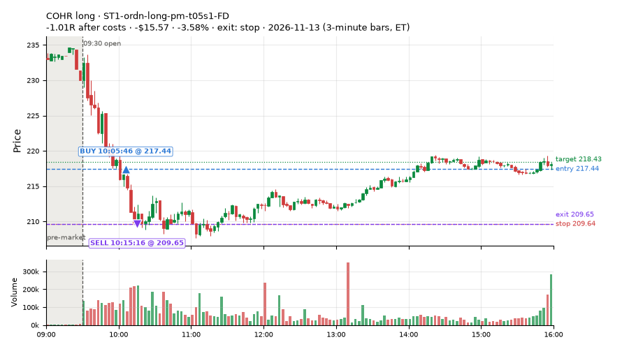
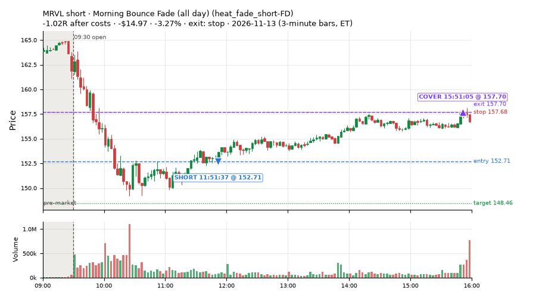
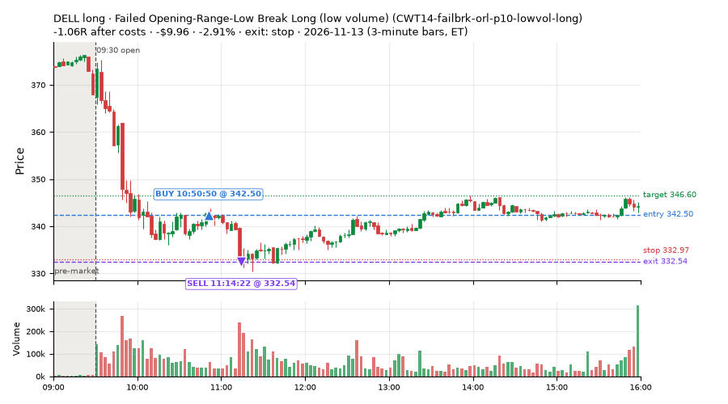
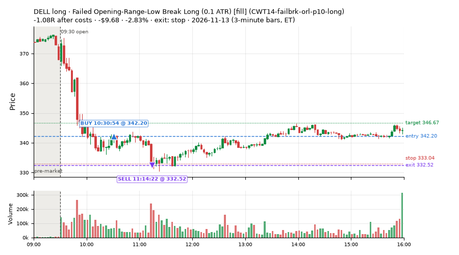

727 trades · win rate 53% · P/L $-212.88
PROBATION: no live setup has passed both locked test periods. 10 owner-directed setups added 2026-10-08 (MarcoFlow top 5 + 5 new), untested live. RW6G1 (RW6 + VWAP band guard) added 2026-10-09, probation.

| Symbol | Setup | Side | In | Out | Entry | Exit | Exit reason | % gained | P/L |
|---|---|---|---|---|---|---|---|---|---|
| NVDL | Midday Gap-Up Dip Buy (heat_fade_long) | long | 11:06 | 13:37 | 16.98 | 17.63 | target | +3.83% | $18.84 |
| CRWG | ST2-slope20up-long-am-t05s1-FD | long | 12:00 | 12:35 | 5.06 | 5.22 | target | +3.16% | $15.52 |
| CLS | Midday Gap-Up Dip Buy (heat_fade_long) | long | 11:05 | 13:21 | 229.92 | 236.89 | target | +3.03% | $13.94 |
| Symbol | Setup | Side | In | Out | Entry | Exit | Exit reason | % lost | P/L |
|---|---|---|---|---|---|---|---|---|---|
| SOXL | heat_fade_short-FD | short | 12:07 | 15:50 | 56.48 | 58.56 | stop | -3.68% | $-16.64 |
| COHR | ST1-ordn-long-pm-t05s1-FD | long | 10:05 | 10:15 | 217.44 | 209.65 | stop | -3.58% | $-15.57 |
| MRVL | heat_fade_short-FD | short | 11:51 | 15:51 | 152.71 | 157.70 | stop | -3.27% | $-14.97 |
| DELL | CWT14-failbrk-orl-p10-lowvol-long | long | 10:50 | 11:14 | 342.50 | 332.54 | stop | -2.91% | $-9.96 |
| DELL | CWT14-failbrk-orl-p10-long | long | 10:30 | 11:14 | 342.20 | 332.52 | stop | -2.83% | $-9.68 |








Signal to fill: median 2s, 90th percentile 4s (727 trades). Bars close each minute; the order follows the bar close.
Best excursion (MFE): median 0.42R; worst (MAE) median 0.53R. 33% of trades never got +0.25R in our favour; 4 reached +1R and still closed at or below 0.
| Symbol | Setup | Best R | Worst R | Closed R |
|---|---|---|---|---|
| PG | MF1-945-flowsell-vwapup-FD | +4.12 | -2.88 | -3.48 |
| SHEL | MF1-945-flowsell-vwapup-FD | +1.75 | -0.62 | -0.67 |
| NXPI | CWT14-failbrk-orl-p10-long | +0.97 | -1.18 | -1.23 |
| HAL | CWT14-failbrk-pdh-p10-short | +0.95 | -1.18 | -1.24 |
| HAL | CWT14-failbrk-pdh-p10-lowvol-short | +0.95 | -1.18 | -1.23 |
| Entry time | Trades | Win | Avg R | P/L |
|---|---|---|---|---|
| 09:50-10:30 | 236 | 57% | -0.12 | $-178.62 |
| 10:30-11:30 | 266 | 61% | -0.05 | $130.70 |
| 11:30-13:00 | 131 | 49% | -0.14 | $5.47 |
| 13:00-14:00 | 50 | 14% | -0.35 | $-139.35 |
| 14:00-16:00 | 44 | 41% | -0.13 | $-31.08 |
| Setup | Trades | Win | Avg R after costs | Adj R (net of SPY) | Avg R ex-market (all sessions) | P/L |
|---|---|---|---|---|---|---|
| Gap-Down Bounce Rejection Short (5% gap) (CWT09-gapdn-bounce-g5-lowerhalf-short) | 2.0 | 50% | -0.20 | -0.10 | -0.27 (beta -1.19, n 126) | $-3.70 |
| Gap-Down VWAP Loss Short (5% gap) (CWT09-gapdn-vwaploss-g5-short) | 2.0 | 50% | +0.02 | +0.03 | -0.27 (beta -3.19, n 98) | $2.09 |
| Coil Under the High (4 bars) (CWT12-coil-k4-long) | 73.0 | 36% | -0.40 | -0.91 | -0.12 (beta +0.41, n 484) | $-54.39 |
| Coil Under the High (6 bars) (CWT12-coil-k6-long) | 12.0 | 25% | -0.49 | -1.21 | -0.14 (beta +1.31, n 167) | $-11.43 |
| Stretched Above VWAP Fade (CWT13-vwapstretch-z05-short) | 3.0 | 33% | -0.33 | -0.14 | -0.04 (beta -0.53, n 140) | $-6.73 |
| Failed Opening-Range-Low Break Long (0.05 ATR) [fill] (CWT14-failbrk-orl-p05-long) | 43.0 | 60% | -0.02 | +0.11 | -0.10 (beta +0.79, n 946) | $-22.65 |
| Failed Opening-Range-Low Break Long (0.05 ATR, low volume) [fill] (CWT14-failbrk-orl-p05-lowvol-long) | 40.0 | 62% | -0.03 | +0.05 | -0.05 (beta +0.72, n 790) | $-7.20 |
| Failed Opening-Range-Low Break Long (0.1 ATR) [fill] (CWT14-failbrk-orl-p10-long) | 104.0 | 73% | +0.11 | -0.08 | -0.08 (beta +0.88, n 528) | $85.06 |
| Failed Opening-Range-Low Break Long (low volume) (CWT14-failbrk-orl-p10-lowvol-long) | 86.0 | 78% | +0.17 | -0.02 | -0.04 (beta +0.88, n 568) | $89.25 |
| Failed Prior-Day-High Break Short (0.05 ATR, low volume) [fill] (CWT14-failbrk-pdh-p05-lowvol-short) | 18.0 | 39% | -0.37 | -0.86 | -0.16 (beta -0.86, n 361) | $-22.32 |
| Failed Prior-Day-High Break Short (low volume) (CWT14-failbrk-pdh-p10-lowvol-short) | 11.0 | 55% | -0.30 | -0.46 | -0.18 (beta -0.93, n 200) | $-11.37 |
| Failed Prior-Day-High Break Short (0.1 ATR) [fill] (CWT14-failbrk-pdh-p10-short) | 14.0 | 57% | -0.25 | -0.40 | -0.18 (beta -1.11, n 326) | $-16.30 |
| Failed Prior-Day-Low Break Long (shallow) (CWT14-failbrk-pdl-p05-long) | 16.0 | 31% | -0.58 | -0.21 | -0.10 (beta +0.68, n 309) | $-45.57 |
| Failed Prior-Day-Low Break Long (0.05 ATR, low volume) [fill] (CWT14-failbrk-pdl-p05-lowvol-long) | 11.0 | 36% | -0.46 | -0.10 | -0.09 (beta +0.99, n 272) | $-21.62 |
| Opening-Range Low Sweep Reversal (LIQ-orl-sweep-open15-s25-long) | 22.0 | 64% | +0.20 | -0.32 | -0.09 (beta +0.23, n 212) | $23.71 |
| MF1-945-flowsell-vwapup-FD | 8.0 | 50% | -0.44 | +0.85 | -0.16 (beta -2.10, n 95) | $4.53 |
| Early Sellers into a Pop (all day) (MF3-open-flowsell-rsi5hi-FD) | 8.0 | 50% | -0.04 | +0.28 | -0.07 (beta -1.35, n 123) | $4.81 |
| MF5-flowsell-vwapup-rsi5hi-FD | 6.0 | 67% | +0.05 | +0.37 | +0.04 (beta -1.55, n 73) | $5.62 |
| NS2-sma50break-overbought-short-FD | 1.0 | 0% | -0.12 | -0.07 | -0.06 (beta -1.22, n 199) | $-0.72 |
| Big Loser VWAP Reclaim Fade (all day) (NS3-failed-vwap-reclaim-short-FD) | 54.0 | 22% | -0.26 | -0.16 | -0.24 (beta -0.56, n 126) | $-107.16 |
| RW2-exhaustion-noon-adv150-short-FD | 13.0 | 31% | -0.39 | -0.28 | -0.38 (beta -1.05, n 305) | $-54.14 |
| RW4-ns3-adv150-short-FD | 28.0 | 21% | -0.25 | -0.17 | -0.21 (beta -0.44, n 88) | $-64.40 |
| RW6G1-ns2-up3-vwap2sd-short-FD | 1.0 | 0% | -0.12 | -0.07 | +0.11 (beta -0.43, n 33) | $-0.72 |
| ST1-ordn-long-pm-t05s1-FD | 10.0 | 80% | +0.01 | +0.02 | -0.06 (beta +1.14, n 44) | $9.63 |
| ST2-slope20up-long-am-t05s1-FD | 44.0 | 91% | +0.33 | +0.21 | +0.01 (beta +0.89, n 250) | $212.69 |
| Midday Gap-Up Dip Buy (heat_fade_long) failed Apr-Jun holdout: -0.138R/trade over 1043 trades | 17.0 | 100% | +0.64 | +0.37 | +0.19 (beta +1.55, n 119) | $90.06 |
| heat_fade_long-FD | 21.0 | 19% | -0.69 | -0.48 | -0.19 (beta +1.41, n 142) | $-86.40 |
| Morning Bounce Fade (heat_fade_short) failed Apr-Jun holdout: -0.015R/trade over 1420 trades | 1.0 | 0% | -1.12 | -1.13 | -0.20 (beta -1.02, n 231) | $-6.76 |
| Morning Bounce Fade (all day) (heat_fade_short-FD) | 58.0 | 22% | -0.49 | -0.21 | -0.19 (beta -1.34, n 440) | $-196.76 |
Market direction (SPY, beta 1) accounted for $84.83 of today's $-212.88; the rest ($-297.71) came from the setups themselves. Avg R net of SPY: -0.19 (incl. a hedge leg's cost; report only).
31 setups live today. Today: 2552 signals, 747 taken, 106 lost because another setup held the symbol (4%). Since 2026-10-21 (18 sessions): 23980 signals, 8030 taken, 1169 lost to other setups (5%). Peak open positions today 285 of 300 slots. Earnings blackout removed 547 symbols before scanning.
Simulated playing time (not live): 15896 what-if trades of signals not taken, avg -0.02R, 57% winners; of them 1168 lost to another setup (avg -0.05R).
Crowded out: NS2-sma50break-overbought-short · Starved: MF1-945-flowsell-vwapup-FD, heat_fade_long, heat_fade_long-FD, heat_fade_short-FD
| Prio | Setup | Today sig / taken | Sessions | Signals / taken / trades | Taken/day | Expected/day | Lost to other setups | Lost to (setup n) | Top skip reasons | SIMULATED: not-taken n / avg R / win | Verdict |
|---|---|---|---|---|---|---|---|---|---|---|---|
| 1 | ST1-ordn-long-pm-t05s1-FD ST1-ordn-long-pm-t05s1-FD | 19 / 10 | 18 | 65 / 44 / 44 | 2.44 | 3.49 | 1 | heat_fade_short-FD 1 | spread / quote / size 14, slots full 3, symbol held by another setup 1 | 21 / -0.05R / 57% | slow 12.2 entries/week; ~5 weeks to 60 trades |
| 2 | NS2-sma50break-overbought-short-FD NS2-sma50break-overbought-short-FD | 3 / 1 | 18 | 427 / 199 / 199 | 11.06 | 17.08 | 14 | CWT12-coil-k4-long 9, LIQ-orl-sweep-open15-s25-long 3, CWT12-coil-k6-long 3 | spread / quote / size 59, not shortable / shorts off 57, per-setup cap 42 | 228 / +0.27R / 71% | ok 55.3 entries/week |
| 3 | Big Gainer Average Reclaim Fade NS2-sma50break-overbought-short | 1 / 0 | 18 | 212 / 8 / 8 | 0.44 | 5.74 | 123 | NS2-sma50break-overbought-short-FD 111, RW6-ns2-up3-short-FD 56, CWT12-coil-k4-long 8 | symbol held by another setup 123, spread / quote / size 48, not shortable / shorts off 20 | 204 / +0.39R / 76% | crowded-out 123 of 212 signals (58%) lost to setups already holding the symbol |
| 4 | MF1-945-flowsell-vwapup-FD MF1-945-flowsell-vwapup-FD | 23 / 8 | 18 | 334 / 95 / 95 | 5.28 | 23.94 | 6 | CWT12-coil-k4-long 3, CWT14-failbrk-orl-p05-long 2, CWT12-coil-k6-long 1 | daily loss cap 124, spread / quote / size 69, broker rejected 15 | 239 / -0.27R / 29% | starved 5.28 entries/day vs ~23.94 expected |
| 5 | ST2-slope20up-long-am-t05s1-FD ST2-slope20up-long-am-t05s1-FD | 115 / 45 | 18 | 653 / 251 / 250 | 13.94 | 24.03 | 36 | heat_fade_short-FD 20, CWT09-gapdn-bounce-g5-lowerhalf-short 6, NS3-failed-vwap-reclaim-short-FD 3 | daily loss cap 219, spread / quote / size 59, slots full 45 | 399 / +0.04R / 67% | ok 69.7 entries/week |
| 6 | Midday Gap-Up Dip Buy heat_fade_long | 24 / 17 | 18 | 194 / 119 / 119 | 6.61 | 30.36 | 21 | heat_fade_long-FD 12, NS3-failed-vwap-reclaim-short-FD 3, RW4-ns3-adv150-short-FD 3 | spread / quote / size 26, symbol held by another setup 21, daily loss cap 15 | 75 / -0.10R / 51% | starved 6.61 entries/day vs ~30.36 expected |
| 7 | Opening-Range Low Sweep Reversal LIQ-orl-sweep-open15-s25-long | 41 / 27 | 18 | 403 / 217 / 212 | 12.06 | – | 17 | CWT14-failbrk-orl-p10-long 14, CWT14-failbrk-orl-p05-lowvol-long 14, CWT14-failbrk-orl-p10-lowvol-long 12 | per-setup cap 57, spread / quote / size 48, daily loss cap 45 | 186 / -0.01R / 47% | ok 60.3 entries/week |
| 8 | RW2-exhaustion-noon-adv150-short-FD RW2-exhaustion-noon-adv150-short-FD | 22 / 13 | 18 | 910 / 305 / 305 | 16.94 | 50.34 | 15 | CWT12-coil-k4-long 5, CWT12-coil-k6-long 3, NS3-failed-vwap-reclaim-short-FD 3 | daily loss cap 377, not shortable / shorts off 93, spread / quote / size 75 | 605 / -0.05R / 51% | ok 84.7 entries/week |
| 9 | heat_fade_long-FD heat_fade_long-FD | 72 / 21 | 18 | 425 / 142 / 142 | 7.89 | 51.74 | 55 | heat_fade_long 46, heat_fade_short 4, heat_fade_short-FD 3 | daily loss cap 162, spread / quote / size 66, symbol held by another setup 55 | 283 / -0.02R / 52% | starved 7.89 entries/day vs ~51.74 expected |
| 10 | Failed Opening-Range-Low Break Long (low volume) CWT14-failbrk-orl-p10-lowvol-long | 141 / 86 | 18 | 1060 / 569 / 569 | 31.61 | – | 8 | CWT14-failbrk-pdh-p05-lowvol-short 4, CWT14-failbrk-orl-p05-long 3, CWT14-failbrk-pdh-p10-short 2 | spread / quote / size 223, daily loss cap 145, slots full 50 | 487 / +0.12R / 62% | ok 158.1 entries/week |
| 11 | Failed Opening-Range-Low Break Long (0.1 ATR) [fill] CWT14-failbrk-orl-p10-long | 171 / 104 | 18 | 1262 / 530 / 530 | 29.44 | – | 18 | CWT14-failbrk-orl-p05-lowvol-long 13, CWT14-failbrk-orl-p05-long 13, CWT14-failbrk-orl-p10-lowvol-long 12 | daily loss cap 378, spread / quote / size 231, per-setup cap 53 | 727 / +0.05R / 63% | ok 147.2 entries/week |
| 12 | Morning Bounce Fade heat_fade_short | 4 / 1 | 18 | 556 / 231 / 231 | 12.83 | 31.76 | 1 | CWT14-failbrk-pdl-p05-lowvol-long 1 | spread / quote / size 131, per-setup cap 110, daily loss cap 59 | 325 / -0.23R / 39% | ok 64.2 entries/week |
| 13 | Failed Opening-Range-Low Break Long (0.05 ATR, low volume) [fill] CWT14-failbrk-orl-p05-lowvol-long | 305 / 40 | 18 | 2371 / 791 / 791 | 43.94 | – | 31 | CWT14-failbrk-orl-p10-lowvol-long 10, CWT14-failbrk-orl-p10-long 9, CWT14-failbrk-orl-p05-long 8 | daily loss cap 876, spread / quote / size 326, per-setup cap 198 | 1574 / +0.02R / 65% | ok 219.7 entries/week |
| 14 | Morning Bounce Fade (all day) heat_fade_short-FD | 191 / 63 | 18 | 1498 / 446 / 441 | 24.78 | 173.78 | 306 | heat_fade_short 231, LIQ-orl-sweep-open15-s25-long 20, heat_fade_long-FD 12 | daily loss cap 312, symbol held by another setup 306, spread / quote / size 217 | 1052 / -0.12R / 43% | starved 24.78 entries/day vs ~173.78 expected |
| 15 | Failed Opening-Range-Low Break Long (0.05 ATR) [fill] CWT14-failbrk-orl-p05-long | 364 / 43 | 18 | 3183 / 947 / 947 | 52.61 | – | 181 | CWT14-failbrk-orl-p10-lowvol-long 147, CWT14-failbrk-orl-p10-long 146, CWT14-failbrk-orl-p05-lowvol-long 144 | daily loss cap 1103, spread / quote / size 438, per-setup cap 325 | 2230 / -0.01R / 64% | ok 263.1 entries/week |
| 16 | Gap-Down Bounce Rejection Short (5% gap) CWT09-gapdn-bounce-g5-lowerhalf-short | 15 / 2 | 18 | 807 / 126 / 126 | 7.00 | – | 11 | CWT14-failbrk-pdl-p05-lowvol-long 4, CWT12-coil-k4-long 3, CWT14-failbrk-pdl-p05-long 3 | not shortable / shorts off 505, spread / quote / size 74, per-setup cap 32 | 677 / -0.03R / 48% | ok 35.0 entries/week |
| 17 | Failed Prior-Day-High Break Short (0.05 ATR, low volume) [fill] CWT14-failbrk-pdh-p05-lowvol-short | 57 / 19 | 17 | 1071 / 362 / 361 | 21.29 | – | 11 | CWT14-failbrk-orl-p10-long 4, CWT14-failbrk-orl-p05-long 4, CWT14-failbrk-orl-p10-lowvol-long 3 | daily loss cap 412, spread / quote / size 223, not shortable / shorts off 46 | 708 / -0.03R / 64% | ok 106.5 entries/week |
| 18 | Failed Prior-Day-High Break Short (low volume) CWT14-failbrk-pdh-p10-lowvol-short | 15 / 11 | 17 | 466 / 200 / 200 | 11.76 | – | 6 | CWT14-failbrk-orl-p10-long 3, CWT14-failbrk-orl-p05-long 3, CWT14-failbrk-orl-p05-lowvol-long 2 | spread / quote / size 130, daily loss cap 101, not shortable / shorts off 17 | 265 / -0.06R / 62% | ok 58.8 entries/week |
| 19 | Failed Prior-Day-High Break Short (0.1 ATR) [fill] CWT14-failbrk-pdh-p10-short | 21 / 14 | 16 | 719 / 326 / 326 | 20.38 | – | 13 | CWT14-failbrk-orl-p10-long 5, CWT14-failbrk-pdh-p05-lowvol-short 3, CWT14-failbrk-pdh-p10-lowvol-short 3 | spread / quote / size 212, daily loss cap 103, not shortable / shorts off 41 | 392 / -0.09R / 60% | ok 101.9 entries/week |
| 20 | Stretched Above VWAP Fade CWT13-vwapstretch-z05-short | 7 / 3 | 16 | 334 / 140 / 140 | 8.75 | – | 3 | LIQ-orl-sweep-open15-s25-long 1, CWT12-coil-k4-long 1, CWT12-coil-k6-long 1 | daily loss cap 131, spread / quote / size 25, not shortable / shorts off 22 | 194 / -0.10R / 46% | ok 43.8 entries/week |
| 21 | Gap-Down VWAP Loss Short (5% gap) CWT09-gapdn-vwaploss-g5-short | 20 / 2 | 15 | 888 / 98 / 98 | 6.53 | – | 9 | CWT14-failbrk-pdl-p05-long 3, CWT14-failbrk-pdl-p05-lowvol-long 3, CWT14-failbrk-orl-p05-lowvol-long 2 | not shortable / shorts off 598, spread / quote / size 80, per-setup cap 54 | 780 / -0.08R / 40% | ok 32.7 entries/week |
| 22 | Coil Under the High (6 bars) CWT12-coil-k6-long | 26 / 14 | 14 | 585 / 169 / 167 | 12.07 | – | 25 | CWT14-failbrk-pdh-p10-short 6, heat_fade_short 6, RW2-exhaustion-noon-adv150-short-FD 4 | daily loss cap 197, spread / quote / size 134, broker rejected 54 | 416 / +0.14R / 46% | ok 60.4 entries/week |
| 23 | Coil Under the High (4 bars) CWT12-coil-k4-long | 92 / 75 | 12 | 1345 / 488 / 486 | 40.67 | – | 53 | RW2-exhaustion-noon-adv150-short-FD 16, CWT14-failbrk-pdh-p05-lowvol-short 10, CWT14-failbrk-pdh-p10-short 10 | per-setup cap 493, broker rejected 154, spread / quote / size 129 | 854 / +0.01R / 68% | ok 203.3 entries/week |
| 24 | Failed Prior-Day-Low Break Long (shallow) CWT14-failbrk-pdl-p05-long | 238 / 16 | 11 | 1334 / 309 / 309 | 28.09 | – | 6 | CWT14-failbrk-orl-p10-lowvol-long 3, CWT14-failbrk-orl-p10-long 3, CWT14-failbrk-orl-p05-lowvol-long 3 | daily loss cap 822, spread / quote / size 179, broker rejected 13 | 1019 / -0.02R / 64% | ok 140.5 entries/week |
| 25 | Failed Prior-Day-Low Break Long (0.05 ATR, low volume) [fill] CWT14-failbrk-pdl-p05-lowvol-long | 194 / 11 | 11 | 959 / 272 / 272 | 24.73 | – | 25 | CWT14-failbrk-orl-p05-lowvol-long 21, CWT14-failbrk-orl-p05-long 14, CWT14-failbrk-orl-p10-long 12 | daily loss cap 463, spread / quote / size 172, broker rejected 26 | 683 / +0.01R / 66% | ok 123.6 entries/week |
| 26 | Big Loser VWAP Reclaim Fade (all day) NS3-failed-vwap-reclaim-short-FD | 189 / 56 | 10 | 606 / 129 / 127 | 12.90 | 22.02 | 65 | ST2-slope20up-long-am-t05s1-FD 19, NS3-failed-vwap-reclaim-short-FD 15, RW4-ns3-adv150-short-FD 13 | daily loss cap 180, not shortable / shorts off 88, slots full 84 | 477 / -0.15R / 38% | ok 64.5 entries/week |
| 27 | RW4-ns3-adv150-short-FD RW4-ns3-adv150-short-FD | 147 / 29 | 10 | 452 / 90 / 89 | 9.00 | 17.34 | 77 | NS3-failed-vwap-reclaim-short-FD 34, RW4-ns3-adv150-short-FD 32, ST2-slope20up-long-am-t05s1-FD 17 | daily loss cap 106, symbol held by another setup 77, slots full 77 | 362 / -0.20R / 35% | ok 45.0 entries/week |
| 28 | Early Sellers into a Pop (all day) MF3-open-flowsell-rsi5hi-FD | 20 / 9 | 9 | 246 / 124 / 123 | 13.78 | 24.16 | 4 | ST2-slope20up-long-am-t05s1-FD 1, heat_fade_long 1, CWT14-failbrk-orl-p05-long 1 | daily loss cap 43, broker rejected 27, not shortable / shorts off 19 | 122 / -0.09R / 45% | ok 68.9 entries/week |
| 29 | MF5-flowsell-vwapup-rsi5hi-FD MF5-flowsell-vwapup-rsi5hi-FD | 13 / 6 | 9 | 157 / 73 / 73 | 8.11 | 15.47 | 2 | heat_fade_short 1, MF1-945-flowsell-vwapup-FD 1, MF3-open-flowsell-rsi5hi-FD 1 | broker rejected 33, daily loss cap 29, spread / quote / size 10 | 84 / -0.16R / 43% | ok 40.6 entries/week |
| 30 | NS5-sma50-flush-oversold-long-FD NS5-sma50-flush-oversold-long-FD | 1 / 0 | 8 | 63 / 30 / 30 | 3.75 | 6.32 | 4 | NS3-failed-vwap-reclaim-short-FD 2, RW4-ns3-adv150-short-FD 2, ST4-emadn-long-am-t1s05-FD 1 | daily loss cap 14, spread / quote / size 7, broker rejected 6 | 33 / +0.14R / 61% | ok 18.8 entries/week |
| 31 | RW6G1-ns2-up3-vwap2sd-short-FD RW6G1-ns2-up3-vwap2sd-short-FD | 1 / 1 | 8 | 62 / 33 / 33 | 4.12 | 3.73 | 3 | RW6-ns2-up3-short-FD 3, NS2-sma50break-overbought-short-FD 2, RW6G1-ns2-up3-vwap2sd-short-FD 2 | not shortable / shorts off 20, broker rejected 4, symbol held by another setup 3 | 29 / +0.04R / 52% | ok 20.6 entries/week |
Every trade is attached as a CSV you can open and edit in Excel or Google Sheets. Live page: https://misiti15.github.io/MCF/live/